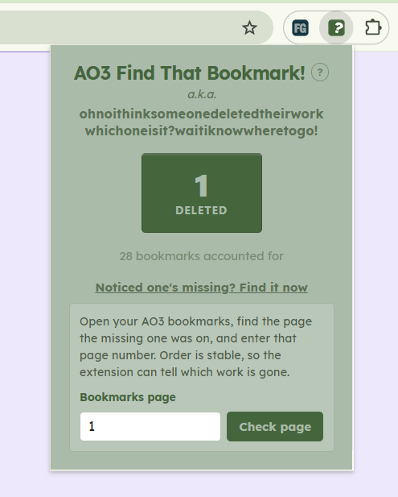
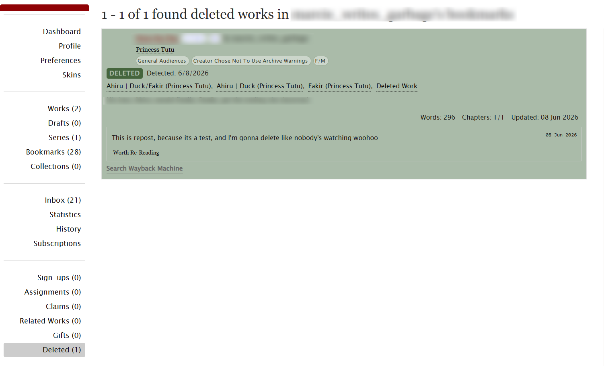

AO3 Find That Bookmark!
Creates a 'Deleted' tab in AO3 so that any bookmarked works that get deleted end up catalogued instead of lost.
Overview
Bookmarks are a common way for users on AO3 to either keep track of which works they've read or highlight a work they really enjoyed. However, when an author deletes their work, a user's bookmark will update into a "This has been deleted, sorry!" placeholder that contains zero information about which work it was. On the reader's end this creates a lot of turmoil, especially when you can't even begin to recall which work that might have been.
AO3 Find That Bookmark! watches your bookmarks and when one becomes unavailable creates a bookmark that includes the title, author, fandom, tags, and summary. This new bookmark gets sorted into a new "Deleted" tab added right alongside your existing bookmark tabs, so you're left with a record instead of a tragic "Sorry!".
Privacy Statement
AO3 Find That Bookmark! doesn't require an account and doesn't run any servers of its own. The metadata it catalogues is stored locally in your browser via local storage. Nothing is uploaded, tracked, or shared with anyone, including me.


Links